01钩子 / 问题
用健康新闻建立风险
开场引用十九岁学生突发脑梗的新闻，并把原因关联到熬夜、外卖和油腻饮食。随后立刻反问“这不就是我吗”，把远处新闻转成打工人的自我投射。
对普通健康困惑而言，一个会继续追问、给出参考并帮助长期记录的 AI 健康搭子，比碎片化搜索更接近被理解和陪伴的体验。
视频先借真实健康新闻制造风险，再把风险投射到熬夜打工人的日常焦虑，随后用多个生活场景展示产品。它是一条完整商业叙事，不应仅凭 5.1 万赞就当成自然起号模板。
对普通健康困惑而言，一个会继续追问、给出参考并帮助长期记录的 AI 健康搭子，比碎片化搜索更接近被理解和陪伴的体验。
不是复述内容，而是标出每一段承担的叙事任务、观众问题和画面证据。
开场引用十九岁学生突发脑梗的新闻，并把原因关联到熬夜、外卖和油腻饮食。随后立刻反问“这不就是我吗”，把远处新闻转成打工人的自我投射。
她描述凌晨搜索健康问题时，答案互相冲突且越来越吓人。真正需要回答的是咖啡、运动、疲劳等日常问题，而这些问题又不足以专门跑一趟医院。
产品阿福不会立刻下结论，而是继续询问睡眠、其他不适、咖啡杯数等背景。视频用连续对话证明产品的价值不是一次性回答，而是问题澄清。
在身材管理场景中，产品继续确认运动频率和饮食习惯，再提出力量训练与饮食搭配建议。这里从健康问答转向持续管理。
产品还能记录十二点前睡觉、睡前冥想等小目标。叙事强调不催促，而是让用户看到自己正在缓慢变好。
结尾把价值归结为高专业标准、只提供参考、不制造恐慌和保护隐私，并邀请观众说出最想问的健康问题。
下列章节覆盖视频的主要论点、步骤与结果；每段都保留时间码和关键画面。
开场引用十九岁学生突发脑梗的新闻，并把原因关联到熬夜、外卖和油腻饮食。随后立刻反问“这不就是我吗”，把远处新闻转成打工人的自我投射。
她描述凌晨搜索健康问题时，答案互相冲突且越来越吓人。真正需要回答的是咖啡、运动、疲劳等日常问题，而这些问题又不足以专门跑一趟医院。
产品阿福不会立刻下结论，而是继续询问睡眠、其他不适、咖啡杯数等背景。视频用连续对话证明产品的价值不是一次性回答，而是问题澄清。
在身材管理场景中，产品继续确认运动频率和饮食习惯，再提出力量训练与饮食搭配建议。这里从健康问答转向持续管理。
产品还能记录十二点前睡觉、睡前冥想等小目标。叙事强调不催促，而是让用户看到自己正在缓慢变好。
结尾把价值归结为高专业标准、只提供参考、不制造恐慌和保护隐私，并邀请观众说出最想问的健康问题。
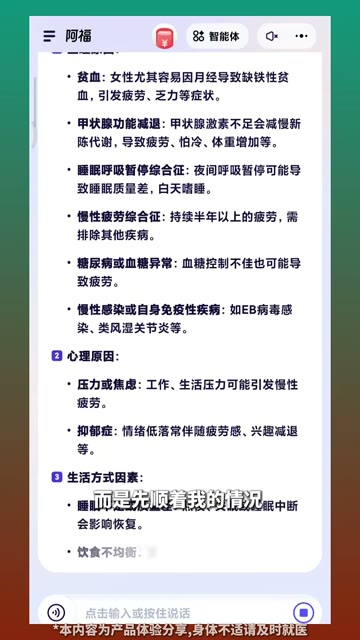
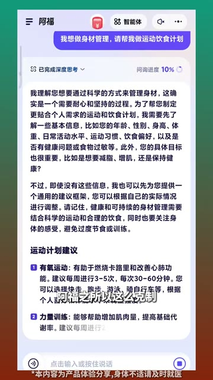
短视频每 1 秒、常规视频每 2 秒、超长视频每 3 秒取一帧。
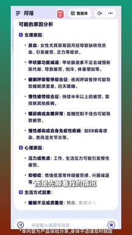
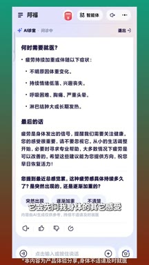
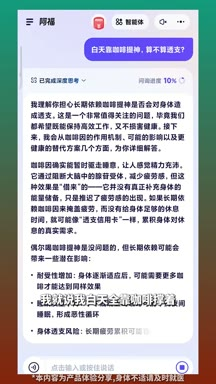
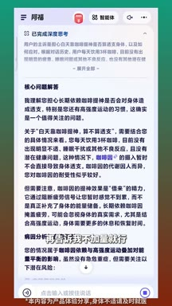
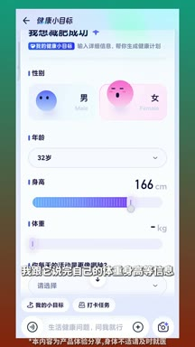
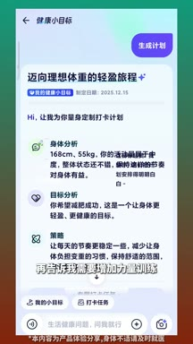
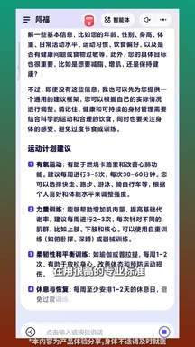
小红书官方 zh-CN 字幕 · 28 段 · 714 字。字幕只记录声音；工具名、界面文字和结果含义必须结合上方视觉知识地图复核。
近日湖北襄阳十九岁大二学生突发脑梗，入院时左侧肢体基本上全瘫了，口齿不清
发现患者经常熬夜。通宵点外卖吃油腻的东西
熬夜吃的油腻，这不就是我吗？
每天都在假装关心自己的健康，但问题是在网上根本不知道该相信谁
你是不是跟我一样，凌晨一点还在刷着手机，想认真查一个健康问题
结果搜出来的答案一个比一个吓人
一个个还不一样，越看越焦虑，而我只是想知道白天靠咖啡顶着算不算透支
这种强度的运动算不算太狠
最近啊总是觉得累，注意力不够集中，是不是该调整一下
但这些问题貌似又不值得专门跑一趟，就在最近我体会到了一种完全不同的方式
哒哒我的健康搭子
是蚂蚁集团推出的ai应用阿福，我跟他聊聊最近的身体的感受
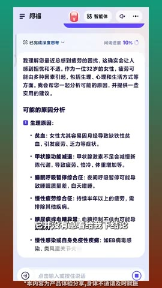
他并没有急着给我下结论
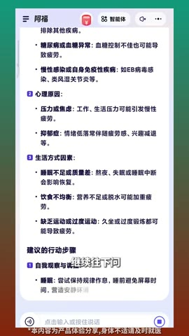
而是先顺着我的情况继续往下问，比如我跟他说最近的身体总是很累
他会先问我身体的其他感受
比如说睡眠时长，还有哪里觉得不舒服等等，也就说我白天全靠咖啡撑着
他会追问一天大概喝多少杯，再告诉我不加量就行
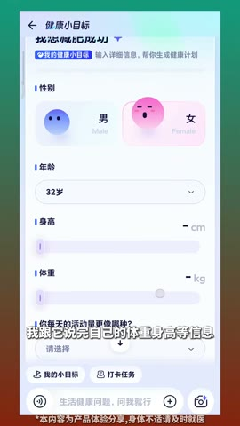
女生嘛，都想做好身材管理，我跟她说完自己的体重啊，身高啊等信息
她还会确认我平时的运动频率啊，饮食习惯啊什么的，再告诉我需要增加力量训练
饮食怎么搭配等等，这种体验跟平时去网站解锁信息完全不一样，大家都知道
健康相关的咨询没有标准答案，把问题一步步的梳理清楚
还有一些以前想要坚持但又总是断掉的小目标，我们也可以用它来记录
比如坚持十二点前睡觉，睡觉前五分钟放松冥想，你看他不会催你
只是想让你意识到。你已经在慢慢的变好
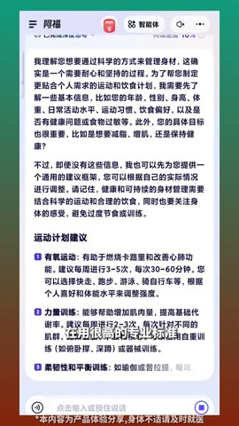
阿福之所以这么客气，是因为他一直在用很高的专业标准在做健康管理
只是提供参考，绝不制造恐慌，一整个靠谱
我们这一代的打工人真正缺的就是这样一个能够看见你，也能够真正回应你
并且能够完全确保你隐私的健康，搭子，你最想问的一个健康的问题是什么？
这是商业/品牌叙事样本。公开页面无法确认合作形式、投流、成本、点击、注册或健康建议准确性，不能把高点赞直接解释为自然转粉或商业转化。
打开小红书原帖 ↗